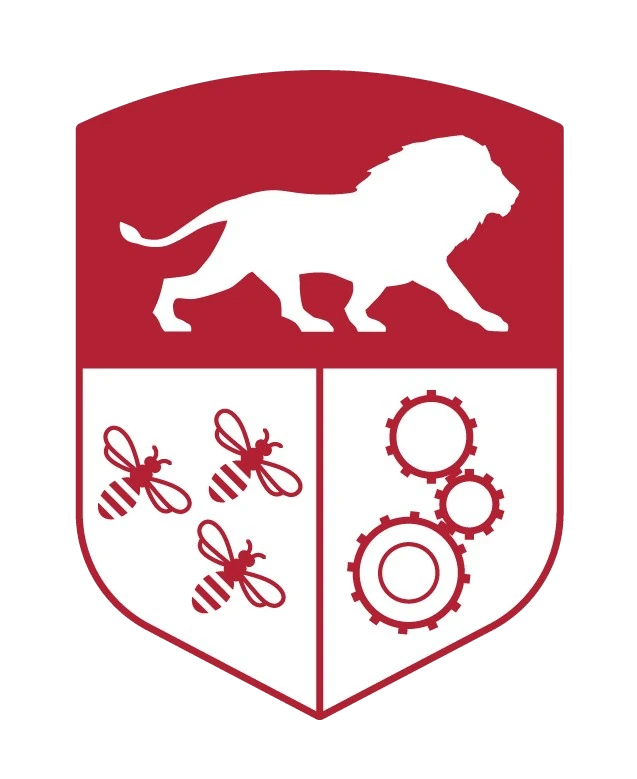
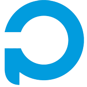
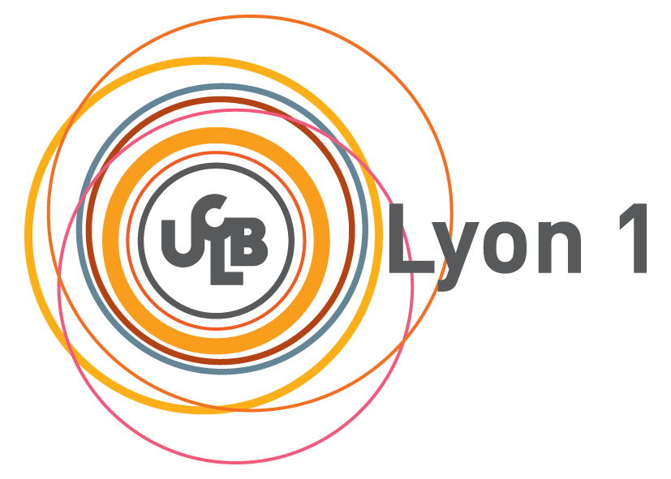
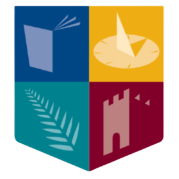
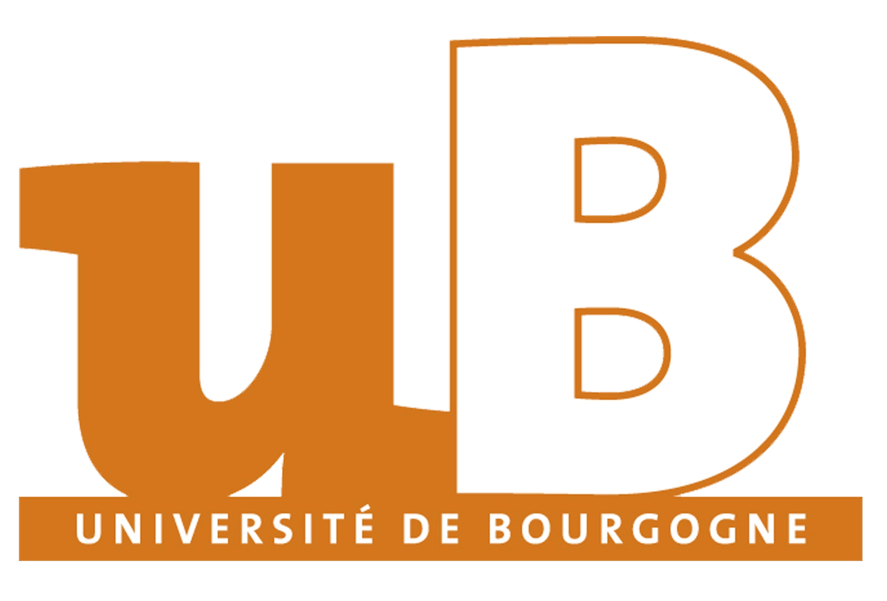

Nathan Salazar
Doctorant et Enseignant · nathansalazarie@gmail.com · GitHub
Expériences professionnelles

- Recherches portant sur la construction d'un modèle de fondation des mouvements humain pour l'analyse et la synthèse des actions et expressions corporelles
- Lecture de nombreux papiers afin d'établir une vision correcte de l'état de l'art dans le domaine de la génération de mouvements humains en 3D et l'estimation de poses humaines et d'expressions faciales à partir de vidéos RGB
- Création d'une pipeline de collecte de données de mouvements 3D à partir de vidéos récoltées sur Internet et création d'un jeu de données en utilisant ce pipeline

- Enseignement de matières (Architecture des Réseaux et des Systèmes Informatiques Répartis partie Protocole Réseaux, Bases de données partie XML, Modélisation des données (Merise), Introduction aux réseaux de neurones) à des élèves de 3,4 et 5e années d'étude. Principalement des heures de TPs, quelques heures de TDs et de surveillance d'examens
- Aide à l'écritures de sujets de TPs en Réseaux et Bases de données
- Aide à l'écriture des sujets d'interrogation finales en Introduction aux réseaux et de neurones
- Écriture d'un sujet d'interrogation en base de données (Sujet sur les bases XML) en contrôle continu

- Recherches portant sur la représentation latente d'images d'oiseaux aux seins de modèles d'autoencodeurs
Études
Recherches portant sur la construction d'un modèle de fondation des mouvements humain pour l'analyse et la synthèse des actions et expressions corporelles
Multi-Agents & Agents intelligents, Bio-Inspired Machine Learning, Techniques d'Apprentissage Automatique, AI & Cognition, ...
Modélisation 3D, Animation 2D, programmation pour le jeu vidéo, ...


IA et réseaux de neurones, Images de synthèse, traitement d’images et audio, génie logiciel, ...
Synthèse d’images, Bases de données, Développement d’application web, Modélisation, Systèmes et réseaux, Graphes, Conception avancée d’applications, ...
Autres
- Français - Maternelle
- Anglais - Courant
- Espagnol - Avancé
- Moto
- Natation
- Voyage